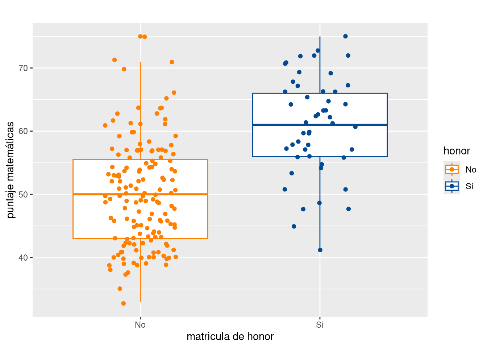

La regresión logística tiene la misma estructura presentada en el modelo de regresión lineal múltiple, solo que la variable dependiente es no numérica y corresponde a una variable cualitativa con dos valores (bivariada). En este caso el modelo se denomina Logit binomial.
Este modelo esta relacionado con predicción y explicación de las decisiones de los consumidores, la clasificación de los clientes de un banco y presenta como función de ajuste la función logit que corresponde a una función en forma de s, en lugar de una linea recta como lo hace la regresión lineal simple.
El objetivo de la regresiòn logística es la de predecir la probabilidad de que una variable binaria (dicotómica) tome los valores posibles en la que esta está definida (\(R_Y= \{0,1 \}\), mediante la combinación lineal de una o varias variables independientes cuantitativas o cualitativas. La regresiòn logistica hace parte de los modelos lineales generalizados en donde se usa una función de enlace llamada logit.
\[Y = \beta_{0} + \beta_{1}X_{1} + \varepsilon\]
El supuesto principal está relacionado con la ausencia de multicolinealidad o en caso de existir que sea muy baja, pues de no ser así se puede afectar el resultado de las estimaciones, además de aumentar artificialmente los errores de los estimadores de los coeficientes
Tambien se supone que la variable dependiente es una variable con distribución Bernoulli o binomial con \(n=1\). Teniendo el valor de uno cuando se obtiene éxito y cero cuando la variable representa fracaso.
El siguiente problema es tomado del documento realizado por Joaquín Amat Rodrigo publicado en RPlus con el fin de presentar el modelo logit simple
Se pretende ilustrar los componentes del modelo lineal general para el caso particular del modelo de logit simple, enmarcado dentro de los modelos llamados modelos de probabilidad y determinar la probabilidad de que un estudiante obtenga matricula de honor a partir de la nota obtenida en matemáticas
Cómo se estiman los modelos de regresión con variables cualitativas como variables respuesta?
Qué problemas se presentan cuando se desean realizar inferencias? Que pruebas de hipotesis se deben realizar?
Como se mide la bondad de ajuste del modelo estimado?
Como se interpretan los resultados obtenidos?
Preguntas planteadas en Gujarati(2009)
Con el prósito de responder a esta preguntas, empezaremos con las caracteristicas de los datos
La data: matricular de paqueteMOD, contiene
los datos de un conjunto de estudiantes que han obtenido matricula de
honor (matricula = 1) y un grupo de no la han conseguido
(matricula = 0) y sus respectivas notas obtenidas en
matemáticas
En este caso se debe contar con una variable categórica con dos niveles representados por dos valores : \(0\) y \(1\) (variable matricula), quien obra como variable dependiente y por lo menos una variable cuantitativa que tome diferentes valores (en este caso la nota de matemáticas).
library(paqueteMOD)
data("matricular")
summary(matricular) matricula matematicas
0:151 Min. :33.00
1: 49 1st Qu.:45.00
Median :52.00
Mean :52.65
3rd Qu.:59.00
Max. :75.00 Distribución de matriculados:
Utilizamos la función table() para encontrar la
distribución de la variable categórica matricula:
table(matricular$matricula)
0 1
151 49 Distribución del puntaje en matemáticas por tipo de matricula
Tambien podemos explorar el comportamiento de la variable cuantitativa (matemáticas) para las dos categorías, que en este caso corresponde a la distribución de las notas por tipo de matricula :
library(ggplot2)
ggplot(data = matricular, aes(x = as.factor(matricula), y = matematicas, color = matricula)) +
geom_boxplot() +
geom_jitter(width = 0.2)+
scale_color_manual(values=c("#FF7F00","#034A94"))+
labs(x = "matricula de honor", y = "puntaje matemáticas") +
ggtitle(" ")